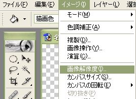
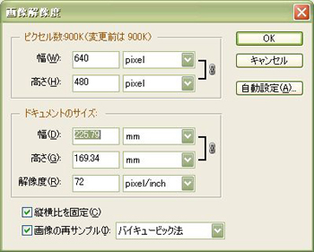
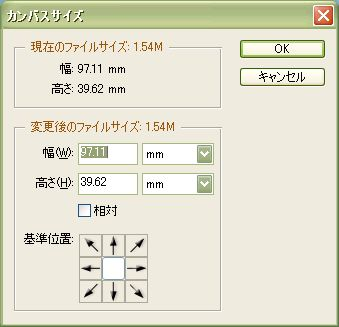
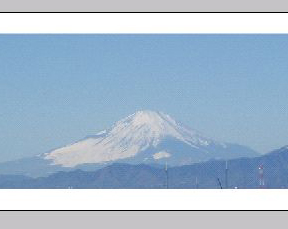

| 解像度とは？ |
CG制作において「解像度」という言葉をよく聞きます。
解像度とは、画像の情報量を表す基準になる言葉です。解像度が高いと、高品質な画像であると言えます。１インチの長さにいくつのピクセル（ドット、つまり画像を構成する１個１個の画素）が入るかということを表しています。たとえば、「72dpi」という解像度は、１インチの幅に72個のドット(点)が収まっているということになります。
一般にweb公開用ならば72dpi、印刷用ならば300〜400dpiくらいの解像度が適当だと言われています。
|
| 画像解像度を変更する |
|
画像解像度を変更するには、Photoshopのウインドウの上部にある、「イメージ」から「画像解像度」を選択します。 |
 |
 |
そうするとこのようなウインドウが出てきます。
●ピクセル数
「ピクセル数」の幅や高さの項目に表示されているのはこの画像を構成するピクセル(点)の数です。
●ドキュメントのサイズ
ドキュメントのサイズの幅と高さの項目は実際に印刷したときの大きさを表します。
●縦横比を固定
画像を再サンプルするときに幅と高さの比を変えないようにします。
●画像の再サンプル
ピクセル数を変更せずにドキュメントのサイズのみを変更するとき、このチェックをはずします。右側の項目は、再サンプルを行うときの補間方法をあらわします。
|
|
| カンバスの大きさを変える |
上のメニューの「イメージ」からカンバスサイズを選択すると、カンバスサイズのウインドウが出てきます。
これは画像そのものを拡大縮小するのではなく、画像の周囲に新しく余白を追加したり、周囲から余分を削除したりして、画像サイズを変更するコマンドです。
そのため解像度には変化はありません。アンカーでどこを中心として大きさを変えるかを選択します。
右の画像は真ん中をアンカーとし上下に大きさを変えたもの |

 |
|